NCERT Solutions for Class 11 Physics Chapter 10 Mechanical Properties of Fluids are part of Class 11 Physics NCERT Solutions. Here we have given NCERT Solutions for Class 11 Physics Chapter 10 Mechanical Properties of Fluids.
NCERT Solutions for Class 11 Physics Chapter 10 Mechanical Properties of Fluids
Topics and Subtopics in NCERT Solutions for Class 11 Physics Chapter 10 Mechanical Properties Of Fluids:
| Section Name | Topic Name |
| 10 | Mechanical Properties Of Fluids |
| 10.1 | Introduction |
| 10.2 | Pressure |
| 10.3 | Streamline flow |
| 10.4 | Bernoulli’s principle |
| 10.5 | Viscosity |
| 10.6 | Reynolds number |
| 10.7 | Surface tension |
QUESTIONS FROM TEXTBOOK
Question 10. 1. Explain why
(a) The blood pressure in humans is greater at the feet than at the brain.
(b) Atmospheric pressure at a height of about 6 km decreases to nearly half of its value at the sea level, though the height of the atmosphere is more than 100 km.
(c) Hydrostatic pressure is a scalar quantity even though pressure is force divided by area.
Answer: (a) The height of the blood column is more for the feet as compared to that for the brain.
Consequently, the blood pressure in humans is greater at the feet than at the brain.
(b) The variation of air-density with height is not linear. So, pressure also does not reduce linearly with height. The air pressure at a height h is given by P = P0e–αh where P0 represents the pressure of air at sea-level and α is a constant.
(c) Due to applied force on liquid, the pressure is transmitted equally in all directions inside the liquid. That is why there is no fixed direction for the pressure due to liquid. Hence hydrostatic pressure is a scalar quantity.
Question 10. 2. Explain why
(a) The angle of contact of mercury with glass is obtuse, while that of water with glass is acute.
(b) Water on a clean glass surface tends to spread out while mercury on the same surface tends to form drops. (Put differently, water wets glass while mercury does not.)
(c) Surface tension of a liquid is independent of the area of the surface.
(d) Water with detergent dissolved in it should have small angles of contact.
(e) A drop of liquid under no external forces is always spherical in shape.
Answer: (a) Let a drop of a liquid L be poured on a solid surface S placed in air A. If TSL,and TSA be the surface tensions corresponding to solid-liquid layer, liquid-air layer and solid-air layer respectively and θ be the angle of contact between the liquid and solid, then
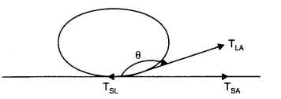
TLA Cos θ + TSL =TSA
=>Cos θ=TSA-TSL/TLA
For the mercury-glass interface, TSA< TSL. Therefore, cos 0 is negative. Thus θ is an obtuse angle. For the water-glass interface, TSA > TSL. Therefore cos 0 is positive. Thus, θ is an acute angle.
(b) Water on a clean glass surface tends to spread out i.e., water wets glass because force of cohesion of water is much less than the force of adhesion due to glass. In case of mercury force of cohesion due to mercury molecules is quite strong as compared to adhesion force due to glass. Consequently, mercury does not wet glass and tends to form drops.
(c) Surface tension of liquid is the force acting per unit length on a line drawn tangentially to the liquid surface at rest. Since h as force is independent of the area of liquid surface therefore, surface tension is also independent of the area of the liquid surface.
(d) We know that the clothes have narrow pores or spaces which act as capillaries. Also, we know that the rise of liquid in a capillary tube is directly proportional to cosθ (Here θ is the angle of contact). As θ is small for detergent, therefore cos θ will be large. Due to this, the detergent will penetrate more in the narrow pores of the clothes.
(e) We know that any system tends to remain in a state of minimum energy. In the absence of any external force for a given volume of liquid its surface area and consequently. Surface energy is least for a spherical shape. It is due to this reason that a liquid drop, in the absence of an external force is spherical in shape.
More Resources for CBSE Class 11
- NCERT Solutions
- NCERT Solutions Class 11 Maths
- NCERT Solutions Class 11 Physics
- NCERT Solutions Class 11 Chemistry
- NCERT Solutions Class 11 Biology
- NCERT Solutions Class 11 Hindi
- NCERT Solutions Class 11 English
- NCERT Solutions Class 11 Business Studies
- NCERT Solutions Class 11 Accountancy
- NCERT Solutions Class 11 Psychology
- NCERT Solutions Class 11 Entrepreneurship
- NCERT Solutions Class 11 Indian Economic Development
- NCERT Solutions Class 11 Computer Science
Question 10. 3. Fill in the blanks using the words from the list appended with each statement:
(a) Surface tension of liquids generally…………….with temperature. (increases/decreases)
(b) Viscosity of gases………………..with temperature, whereas viscosity of liquids…………..with temperature. (increases/decreases)
(c) For solids with elastic modulus of rigidity, the shearing force is proportional to…………………..while for fluids it is proportional to…………. (shear strain/rate of shear strain)
(d) For a fluid in steady flow, the increases inflow speed at a constriction follows from…………………………. while the decrease of pressure there follows from………………….(conservation of mass/Bernoulli’s principle)
(e) For the model of a plane in a wind tunnel, turbulence occurs at a…………….speed than the critical speed for turbulence for an actual plane. (greater/smaller)
Answer: (a), decreases
(b) increases; decreases
(c) shear strain; rate of shear strain
(d) conservation of mass; Bernoulli’s principle
(e) greater.
Question 10. 4. Explain why
(a) To keep a piece of paper horizontal, you should blow over, not under, it.
(b) When we try to close a water tap with our fingers, fast jets of water gush through the openings between our fingers.
(c) The size of a needle of a syringe controls flow rate better than the thumb pressure exerted by a doctor while administering an injection.
(d) A fluid flowing out of a small hole in a vessel results in a backward thurst on the vessel.
(e) A spinning cricket ball in air does not follow a parabolic trajectory.
Answer: (a) When we blow over the piece of paper, the velocity of air increases. As a result, the pressure on it decreases in accordance with the Bernoulli’s theorem whereas the pressure below remains the same (atmospheric pressure). Thus, the paper remains horizontal.
(b) By doing so the area of outlet of water jet is reduced, so velocity of water increases according to equation of continuity av = constant.
(c) For a constant height, Bernoulli’s theorem is expressed as P +1/2 ρ v2 = Constant
In this equation, the pressure P occurs with a single power whereas the velocity occurs with a square power. Therefore, the velocity has more effect compared to the pressure. It is for this reason that needle of the syringe controls flow rate better than the thumb pressure exerted by the doctor.
(d) This is because of principle of conservation of momentum. While the flowing fluid carries forward momentum, the vessel gets a backward momentum.
(e) A spinning cricket ball would have followed a parabolic trajectory has there been no air. But because of air the Magnus effect takes place. Due to the Magnus effect the spinning cricket ball deviates from its parabolic trajectory.
Question 10. 5. A 50 kg girl wearing high heel shoes balances on a single heel. The heel is circular with a diameter 1.0 cm. What is the pressure exerted by the heel on the horizontal floor?
Answer:
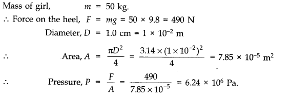
Question 10. 6. Toricelli’s barometer used mercury. Pascal duplicated it using French wine of density 984 kg m-3. Determine the height of the wine column for normal atmospheric pressure.
Answer:
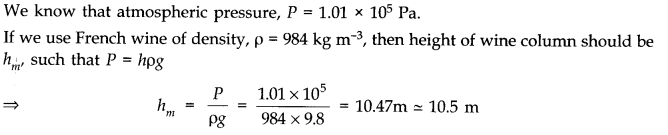
Question 10. 7. A vertical off-shore structure is built to withstand a maximum stress of 109 Pa. Is the structure suitable for putting up on top of an oil well in the ocean? Take the depth of the ocean to be roughly 3 km, and ignore ocean currents.
Answer: Here, Maximum stress = 109 Pa, h = 3 km = 3 x 103 m;
p (water) = 103 kg/m3 and g = 9.8 m/s2.
The structure will be suitable for putting upon top of an oil well provided the pressure exerted by sea water is less than the maximum stress it can bear.
Pressure due to sea water, P = hρg = 3 x 103 x 103x 9.8 Pa = 2.94 x 107 Pa
Since the pressure of sea water is less than the maximum
Question 10. 8. A hydraulic automobile lift is designed to lift cars with a maximum mass of 3000 kg. The area of cross-section of the piston carrying the load is 425 cm2. What maximum pressure would the smaller piston have to bear?
Answer:
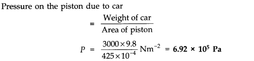
This is also the maximum pressure that the smaller piston would have to bear.
Question 10. 9. A U tube contains water and methylated spirit separated by mercury. The mercury columns in the two arms are in level with 10.0 cm of water in one arm and 12.5 cm of spirit in the other. What is the relative density of spirit?
Answer: For water column in one arm of U tube, h1 = 10.0 cm; ρ1 (density) = 1 g cm-3
For spirit column in other arm of U tube, h2 = 12.5 cm; ρ2 =?
As the mercury columns in the two arms of U tube are in level, therefore pressure exerted by each is equal.
Hence h1ρ1g = h2ρ2g or ρ2 = h1ρ1/h2 =10 x 1/12.5 = 0.8 g cm-3
Therefore, relative density of spirit = ρ2/ρ1 = 0.8/1 = 0.8
Question 10. 10. In Q.9, if 15.0 cm of water and spirit each are further poured into the respective arms of the tube, what is the difference in the levels of mercury in the two arms? (Relative density of mercury = 13.6)
Answer:
Height of the water column, h1 = 10 + 15 = 25 cm
Height of the spirit column, h2 = 12.5 + 15 = 27.5 cm
Density of water, ρ1 = 1 g cm–3
Density of spirit, ρ2 = 0.8 g cm–3
Density of mercury = 13.6 g cm–3
Let h be the difference between the levels of mercury in the two arms.
Pressure exerted by height h, of the mercury column:
= hρg
= h × 13.6g … (i)
Difference between the pressures exerted by water and spirit:
= ρ1h1g – ρ2h2g
= g(25 × 1 – 27.5 × 0.8)
= 3g … (ii)
Equating equations (i) and (ii), we get:
13.6 hg = 3g
h = 0.220588 ≈ 0.221 cm
Hence, the difference between the levels of mercury in the two arms is 0.221 cm.
Question 10. 11. Can Bernoulli’s equation be used to describe the flow of water through a rapid motion in a river? Explain.
Answer: Bernoulli’s theorem is applicable only for there it ideal fluids in streamlined motion. Since the flow of water in a river is rapid, way cannot be treated as streamlined motion, the theorem cannot be used.
Question 10. 12. Does it matter if one uses gauge instead of absolute pressures in applying Bernoulli’s equation? Explain.
Answer: No, it does not matter if one uses gauge instead of absolute pressures in applying Bernoulli’s equation, provided the atmospheric pressure at the two points where Bernoulli’s equation is applied are significantly different.
Question 10. 13. Glycerine flows steadily through a horizontal tube of length 1.5 m and radius 1.0 cm. If the amount of glycerine collected per second at one end is 4.0 x 10-3 kg s-1, what is the pressure difference between the two ends of the tube? (Density of glycerine = 1.3 x 103 kg m-3 and viscosity of glycerine = 0.83 Pa s). [You may also like to check if the assumption of laminar flow in the tube is correct],
Answer:
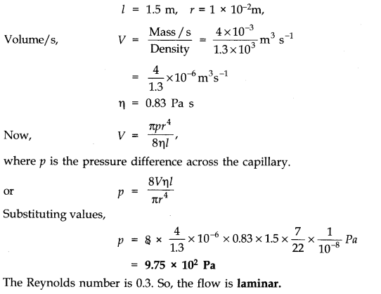
Question 10. 14.
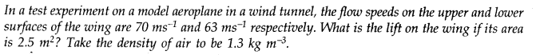
Answer:
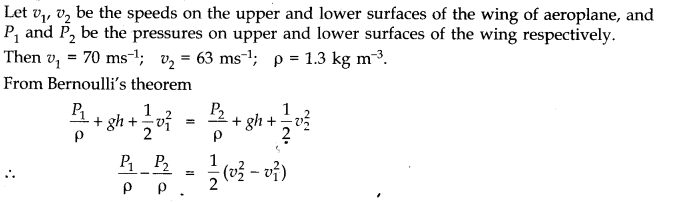
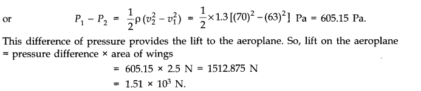
Question 10. 15. Figures (a) and (b) refer to the steady flow of a (non-viscous) liquid. Which of the two figures in incorrect? Why?
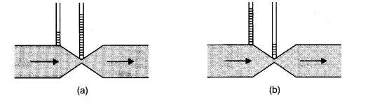
Answer: Figure (a) is incorrect. It is because of the fact that at the kink, the velocity of flow of liquid is large and hence using the Bernoulli’s theorem the pressure is less. As a result, the water should not rise higher in the tube where there is a kink (i.e., where the area of cross-section is small).
Question 10. 16. The cylindrical tube of a spare pump has a cross-section of 8.0 cm2 one end of which has 40 fine holes each of diameter 1.0 mm. If the liquid flow inside the tube is 1.5 m min-1, what is the speed of ejection of the liquid through the holes?
Answer:
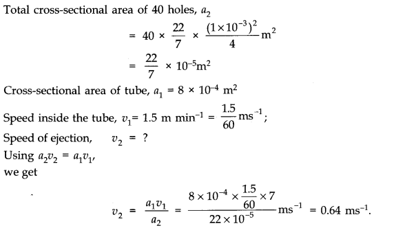
Question 10. 17. A U-shaped wire is dipped in a soap solution, and removed. A thin soap film formed between the wire and a light slider supports a weight of 1.5 x 10-2 N (which includes the small weight of the slider). The length of the slider is 30 cm. What is the surface tension of the film?
Answer: In present case force of surface tension is balancing the weight of 1.5 x 10-2 N, hence force of surface tension, F = 1.5 x 10-2 N.
Total length of liquid film, l = 2 x 30 cm = 60 cm = 0.6 m because the liquid film has two surfaces.
Surface tension, T = F/l =1.5 x 10-2 N/0.6m =2.5 x 10-2 Nm-1
Question 10. 18. Figure (a) below shows a thin film supporting a small weight = 4.5 x 10-2 N. What is the weight supported by a film of the same liquid at the same temperature in Fig. (b) and (c) Explain your answer physically.
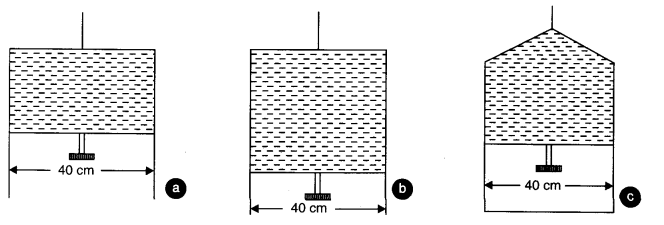
Ans. (a) Here, length of the film supporting the weight = 40 cm = 0.4 m. Total weight supported (or force) = 4.5 x 10-2 N.
Film has two free surfaces, Surface tension, S =4.5 x 10-2/2 x 0.4 =5.625 x 10-2 Nm-1
Since the liquid is same for all the cases (a), (b) and (c), and temperature is also same, therefore surface tension for cases (b) and (c) will also be the same = 5.625 x 10-2. In Fig. 7(b), 38(b) and (c), the length of the film supporting the weight is also the saihe as that of (a), hence the total weight supported in each case is 4.5 x 10-2 N.
Question 10. 19. What is the pressure inside a drop of mercury of radius 3.0 mm at room temperature? Surface tension of mercury at that temperature (20°C) is 4.65 x 10-1 Nm-1. The atmospheric pressure is 1.01 x 105 Pa. Also give the excess pressure inside the drop.
Answer:
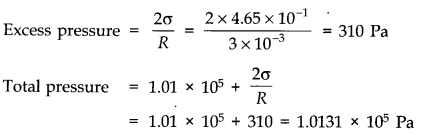
Since data is correct up to three significant figures, we should write total pressure inside the drop as 1.01 x 105 Pa.
Question 10. 20. What is the excess pressure inside a bubble of soap solution of radius 5.00 mm, given that the surface tension of soap solution at the temperature (20 °C) is 2.50 x 10-2 Nm-1? If an air bubble of the same dimension were formed at depth of 40.0 cm inside a container containing the soap solution (of relative density 1.20), what would be the pressure inside the bubble? (1 atmospheric pressure is 1.01 x 105 Pa).
Answer: Here surface tension of soap solution at room temperature
T = 2.50 x 10-2 Nm-1, radius of soap bubble, r = 5.00 mm = 5.00 x 10-3 m.

Question 10. 21. A tank with a square base of area 1.0 m2 is divided by a vertical partition in the middle. The bottom of the partition has a small-hinged door of area 20 cm2. The tank is filled with water in one compartment, and an acid (of relative density 1.7) in the other, both to a height of 4.0 m. Compute the force necessary to keep the door close.
Answer:
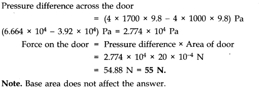
Question 10. 22. A manometer reads the pressure of a gas in an enclosure as shown in Fig. (a) When a pump removes some of the gas, the manometer reads as in Fig. (b). The liquid used in the manometers is mercury and the atmospheric pressure is 76 cm of mercury.
(a) Give the absolute and gauge pressure of the gas in the enclosure for cases (a) and (b), in units of cm of mercury.
(b) How would the levels change in case (b) if 13.6 cm of water (immiscible with mercury) is poured into the right limb of 1 the manometer? Ignore the small change in the volume of the gas.
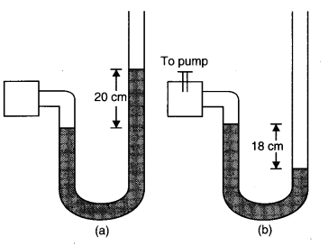
Answer:
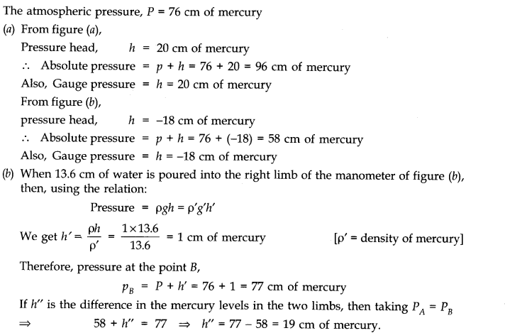
Question 10. 23. Two vessels have the same base area but different shapes. The first vessel takes twice the volume of water that the second vessel requires to fill up to a particular common height. Is the force exerted by the water on the base of the vessel the same in the two cases? If so, why do the vessels filled with water to that same height give different readings on a weighing scale?
Answer: Pressure (and therefore force) on the two equal base areas are identical. But force is exerted by water on the sides of the vessels also, which has a non-zero vertical component when sides of the vessel are not perfectly normal to the base. This net vertical component of force by water on the sides of the vessel is greater for the first vessel than the second. Hence, the vessels weigh different even when the force on the base is the same in the two cases.
Question 10. 24. During blood transfusion, the needle is inserted in a vein where the gauge pressure is 2000 Pa. At what height must the blood container be placed so that blood may just enter the vein? Given: density of whole blood = 1.06 x 103 kg m-3.
Answer: h=P/ρg =200/(1.06 x 103 x 9.8) =0.1925 m
The blood may just enter the vein if the height at which the blood container be kept must be slightly greater than 0.1925 m i.e„ 0.2 m.
Question 10. 25. In deriving Bernoulli’s equation, we equated the work done on the fluid in the tube to its change in the potential and kinetic energy, (a) What is the largest average velocity of blood flow in an artery of diameter 2 x 10-3 m if the flow must remain laminar? (b) Do the dissipative forces become more important as the fluid velocity increases? Discuss qualitatively.
Answer: (a) If dissipative forces are present, then some forces in liquid flow due to pressure difference is spent against dissipative forces, due to which the pressure drop becomes large.
(b) The dissipative forces become more important with increasing flow velocity, because of turbulence.
Question 10. 26. (a) What is the largest average velocity of blood flow in an artery of radius 2 x 103 m if the flow must remain laminar?
(b) What is the corresponding flow rate? Take viscosity of blood to be 2.084 x 10-3 Pa-s. Density of blood is 1.06 x 103 kg/m3 .
Answer:
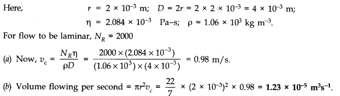
Question 10. 27. A plane is in level flight at constant speed and each of its wings has an area of 25 m2. If the speed of the air is 180 km/h over the lower wing and 234 km/h over the upper wing surface, determine the plane’s mass. (Take air density to be 1 kg/m3), g = 9.8 m/s2.
Answer:
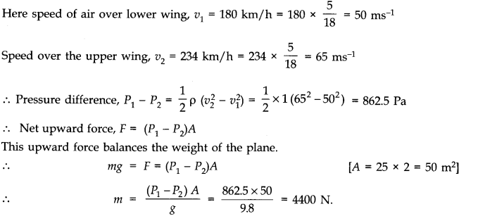
Question 10. 28. In Millikan’s oil drop experiment, what is the terminal speed of an uncharged drop of radius 2.0 x 10-5 m and density 1.2 x 103 kg m-3. Take the viscosity of air at the temperature of the experiment to be 1.8 x 10-5 Pa-s. How much is the viscous force on the drop at that speed? Neglect buoyancy of the drop due to air.
Answer: Here radius of drop, r = 2.0 x 10-5 m, density of drop, p = 1.2 x 103 kg/m3, viscosity of air TI = 1.8 x 10-5 Pa-s.
Neglecting upward thrust due to air, we find that terminal speed is
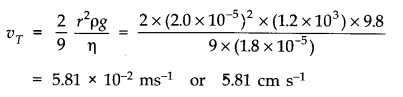
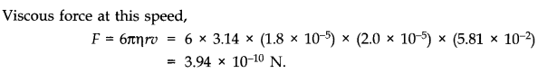
Question 10. 29. Mercury has an angle of contact equal to 140° with soda-lime glass. A narrow tube of radius 1.0 mm made of this glass is dipped in a trough containing mercury. By what amount does the mercury dip down in the tube relative to the liquid surface outside? Surface tension of mercury at the temperature of the experiment is 0.465 Nm-2. Density of mercury = 13.6 x 10 kg m-3
Answer:
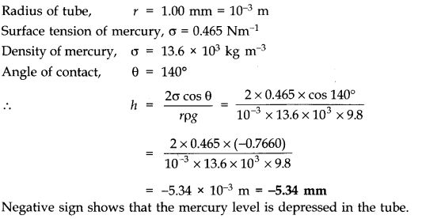
Question 10. 30. Two narrow bores of diameters 3.0 mm and 6.0 mm are joined together to form a U-tube open at both ends. If the U-tube contains water, what is the difference in its levels in the two limbs of the tube? Surface tension of water at the temperature of the experiment is 7.3 x 10-2 Nm-2. Take the angle of contact to be zero and density of water to be 1.0 x 103 kg m-3(g = 9.8 ms-2).
Answer: Let rx be the radius of one bore and r2 be the radius of second bore of the U-tube. The, if h1 and h2 are the heights of water on two sides, then
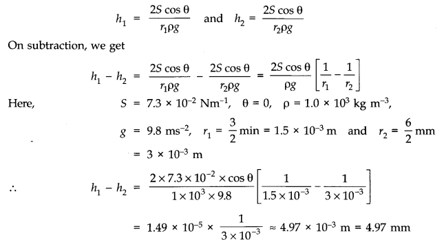
Question 10. 31. (a) It is known that density p of air decreases with height y as
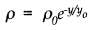
where ρ0 = 1.25 kg m-3 is the density at sea level, and y0 is a constant. This density variation is called the law of atmospheres. Obtain this law assuming that the temperature of atmosphere remains a constant (isothermal conditions). Also, assume that the value of g remains constant.
(b) A large He balloon of volume 1425 m3 is used to lift a payload of 400 kg. Assume that the balloon maintains a constant radius as it rises. How high does it rise?[Take y0 = 8000 m and ρHe = 0.18 kg m-3].
Answer: (a) We know that rate of decrease of density p of air is directly proportional to the height y. It is given as dρ/dy = – ρ/y0
where y is a constant of proportionality and -ve sign signifies that density is decreasing with increase in height. On integration, we get
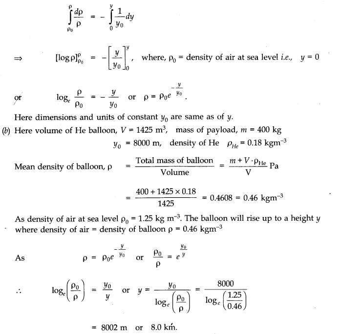
NCERT Solutions for Class 11 Physics All Chapters
- Chapter 1 Physical World
- Chapter 2 Units and Measurements
- Chapter 3 Motion in a Straight Line
- Chapter 4 Motion in a plane
- Chapter 5 Laws of motion
- Chapter 6 Work Energy and power
- Chapter 7 System of particles and Rotational Motion
- Chapter 8 Gravitation
- Chapter 9 Mechanical Properties Of Solids
- Chapter 10 Mechanical Properties Of Fluids
- Chapter 11 Thermal Properties of matter
- Chapter 12 Thermodynamics
- Chapter 13 Kinetic Theory
- Chapter 14 Oscillations
- Chapter 15 Waves
We hope the NCERT Solutions for Class 11 Physics Chapter 10 Mechanical Properties of Fluids help you. If you have any query regarding NCERT Solutions for Class 11 Physics Chapter 10 Mechanical Properties of Fluids, drop a comment below and we will get back to you at the earliest.